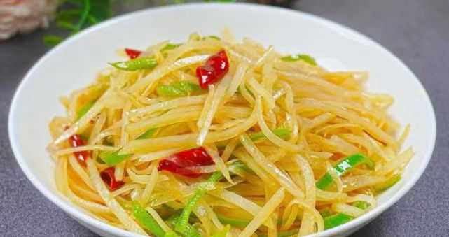
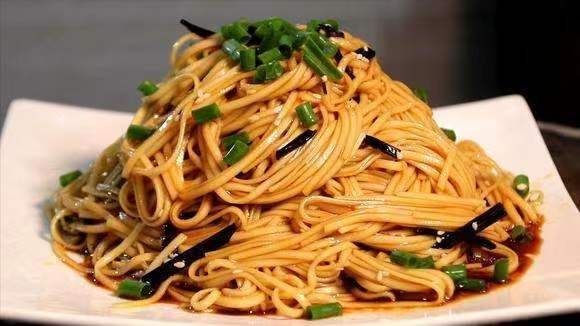
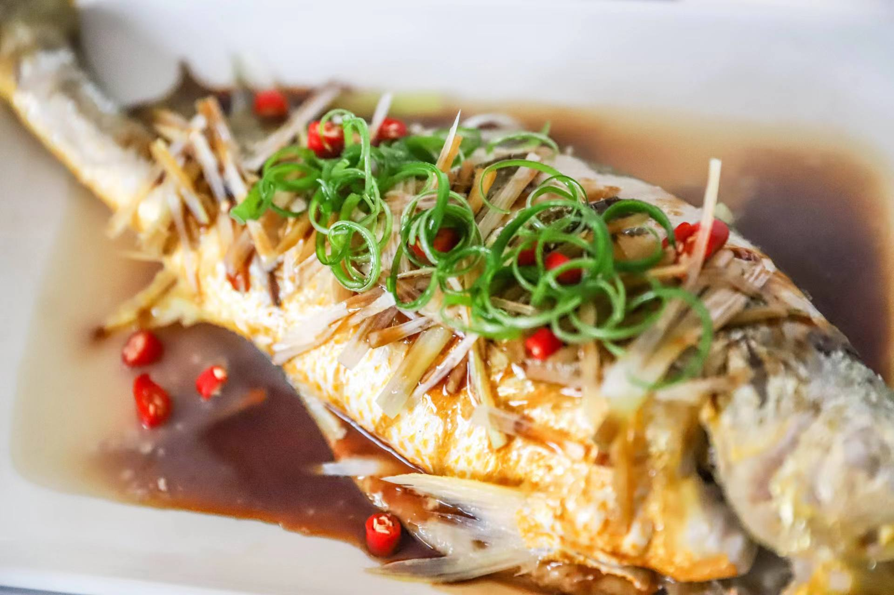
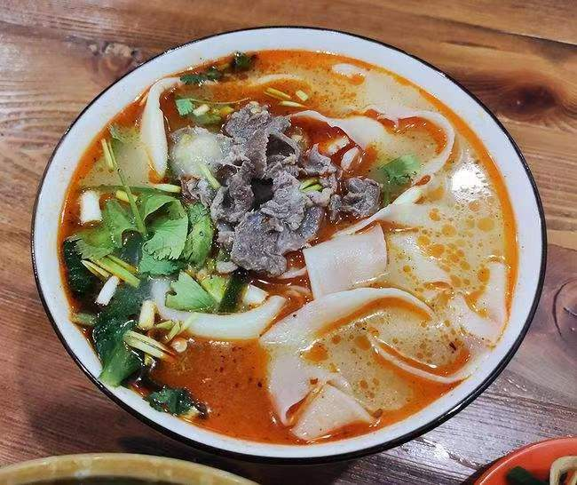

|
|
|  |
酸辣土豆丝
- 将土豆削皮切细丝，泡在水中洗去淀粉，既能避免其变黑又能使其在炒烧时保持白嫩、爽脆。炒前捞出沥干水分。
- 青、红辣椒去籽、蒂切成细丝，并干辣椒切丝。
- 炒锅上火，加入油烧热，然后放葱丝爆锅，再加入干辣椒炒香，然后再加入青红椒丝、土豆丝，并炒至八成熟时加入精盐、味精调味，再淋上香油和香醋炒熟即可。
|
|
|  |
葱香拌面
- 选取花生油，不要其他的油品。
- 香葱洗了沥干明水，切大段
- 油烧热到起微烟，放香葱段，炸到焦黄不糊。捞出香葱就是葱油。捞出的香葱不要扔了，切到饺馅里跟猪油渣一样出香效果。
- 和面。500克面粉，200毫升水，先拌后揉再擀皮，最后切了成面条。
- 准备菜码。不同地区会有不同的菜码，葱油只起到油香味品的作用，不能唯他是问，只用葱油。所以，必须有菜品拌入，才成拌面。最简单的菜码，切了黄瓜丝，烫了绿豆芽等，起码要有咸菜。
- 煮面。水开下面，再开点水，再开捞起到碗里，放菜码，倒葱油，再凭各人口味给生抽和醋、辣椒油，盐等，拌了开吃。
|
|
|  |
清蒸鱼
- 将鲈鱼洗净并处理好内脏，从脊椎处切断至腹部（保留一部分不切断），用盐和料酒一起腌渍10分钟。
- 方火腿切成片，香葱切段、生姜切片。盘中摆上一层生姜片，方火腿片和香葱段塞入鱼身开口处，将鱼放在生姜片上。
- 摆好盘的鱼上锅蒸10分钟左右，取出后淋入豉油，最后浇上一层热油即可。
|
|
|  |
烩面
- 买来一块羊肉，提前用清水浸泡30分钟，浸泡之后切成细丝。适量木耳、海带丝、粉条提前冷水泡发。准备小葱、香菜各一株，枸杞少许，葱姜蒜切碎，香菜切末备用。
- 锅中加油（油可以多放一些），油烧至五成热，加入切好的羊肉，翻炒至羊肉变色之后放入葱姜蒜爆香，小葱炒出香味之后倒入提前准备好的开水。
- 准备三片烩面，用手抻长，撕成面条，下入锅中。随后下入木耳、海带丝、枸杞，用勺子搅拌均匀，防止面条粘连。
- 面条煮软之后下入10克的盐、5克鸡精、适量的胡椒粉调味，搅拌均匀。烩面煮熟后下入青菜，青菜下入锅中之后不用多煮，稍微煮软之后即可出锅。
|